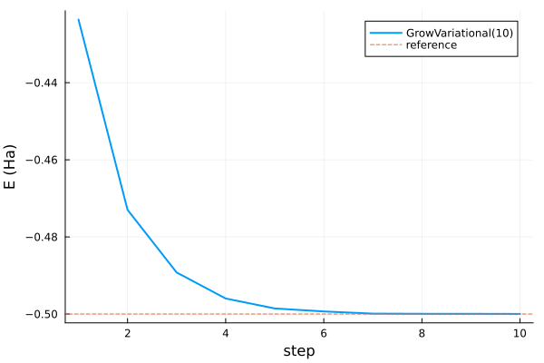

FewBodyECG.jl
FewBodyECG.jl builds variational explicitly correlated Gaussian bases for few-body quantum systems. You define particles and pair interactions with Operators, choose a solver method, and get back a Solution with energies, coefficients, convergence information, and plotting recipes.
Installation
import Pkg
Pkg.add("FewBodyECG")Quick Start
using FewBodyECG
import Antique
using Plots
ops = Operators([1.0e15, 1.0], [+1.0, -1.0])
ops += "Kinetic"
ops += "Coulomb"
sol = solve(ops, GrowVariational(basis = 10, candidates = 20, scale = 1.0))
exact = Antique.E(Antique.HydrogenAtom(Z = 1), n = 1)
println("E0 = ", sol.E₀, " Ha (Antique ", exact, ", Δ = ", sol.E₀ - exact, ")")
solFewBodyECG solution — 10 × Rank0Gaussian, 2 operator terms
method GrowVariational(10)
E₀ -0.49996868 Ha (variational upper bound)
convergence ConvergenceReport: ✓ stationary |∇E| = 0.0 (gtol 1.0e-6)
note: stationary point of the parameter optimisation; the variational upper bound still applies
conditioning cond(S) ≈ 3.0e7 — handled (whitened eigensolver)This is hydrogen in atomic units: a heavy positive particle and one electron, with kinetic energy plus Coulomb attraction. In the infinite-proton-mass limit the relative-coordinate Hamiltonian is
\[\hat{H} = -\frac{1}{2\mu}\nabla_r^2 -\frac{1}{r}, \qquad \mu = \frac{m_p m_e}{m_p + m_e} \approx 1.\]
Antique.jl gives the exact ground-state energy -0.5 Ha. The reported convergence is a statement about the sampled and optimized basis, while the energy remains a variational upper bound.
plot(sol, exact)
Read Theory for the method, Building systems for Operators, Choosing a solver for method selection, Convergence for how to interpret a Solution, and the example gallery for complete scripts.